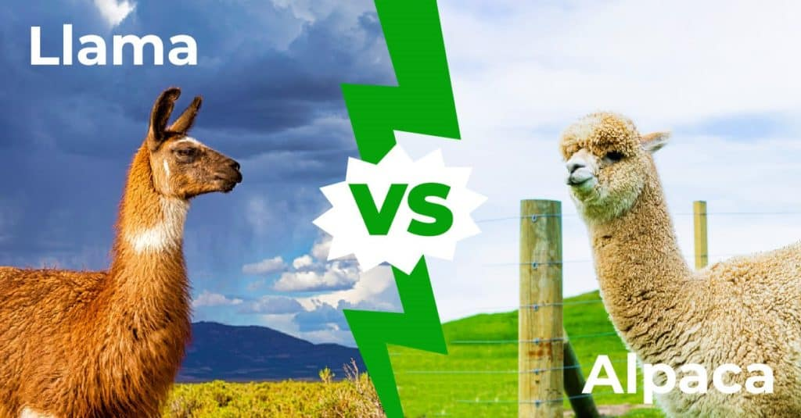

Llamas and alpacas are domesticated members of the camelid family. That makes them camelid cousins to the Bactrian camel and the Dromedary camel.
When you see one of these adorable creatures, do you know which animal you’re looking at? Is it a llama? Or maybe an alpaca? Hhmmm. Are you sure?
The biggest difference between llamas and alpacas is their size and the type of coat each of them has. But they have many other differences, like their faces, ears, personality and purpose.
Check out the links at the top of the page to learn more about their differences!
